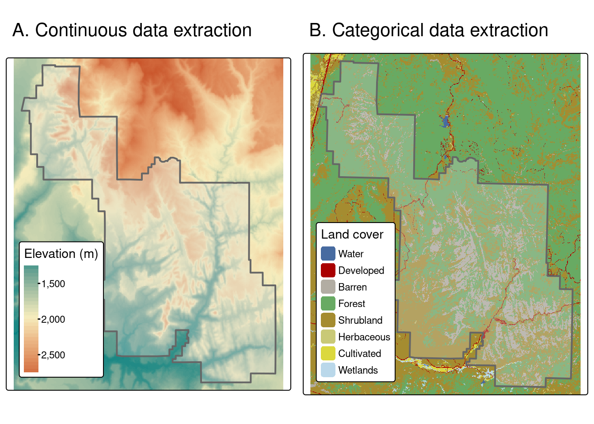
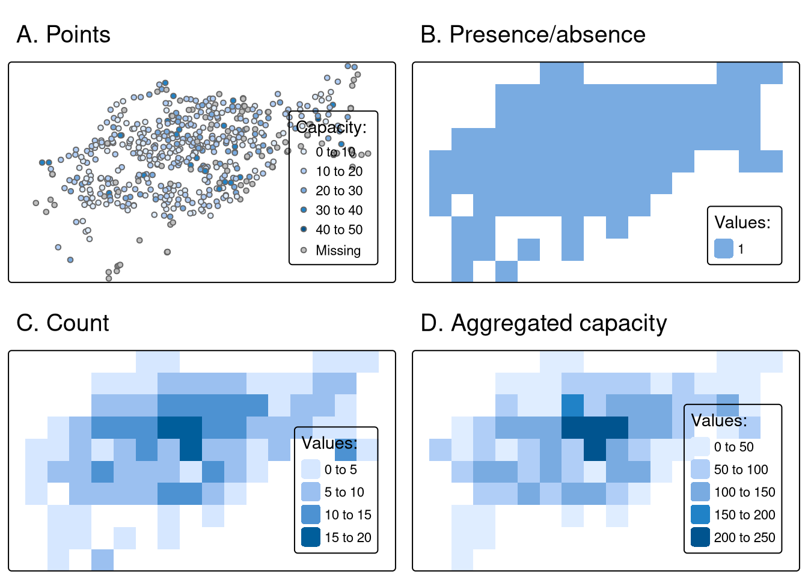
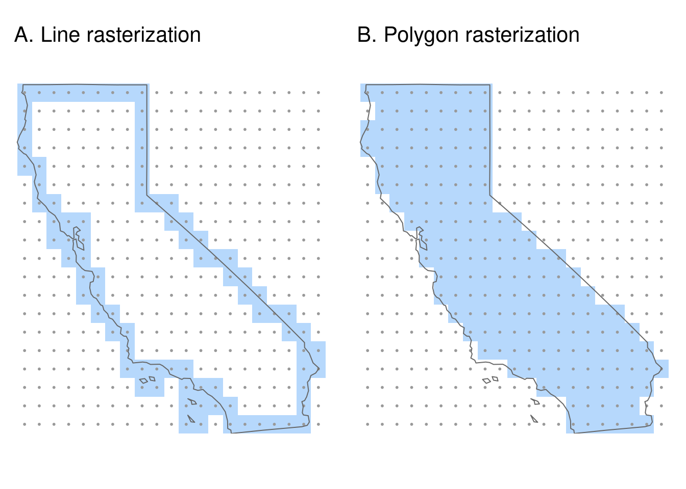
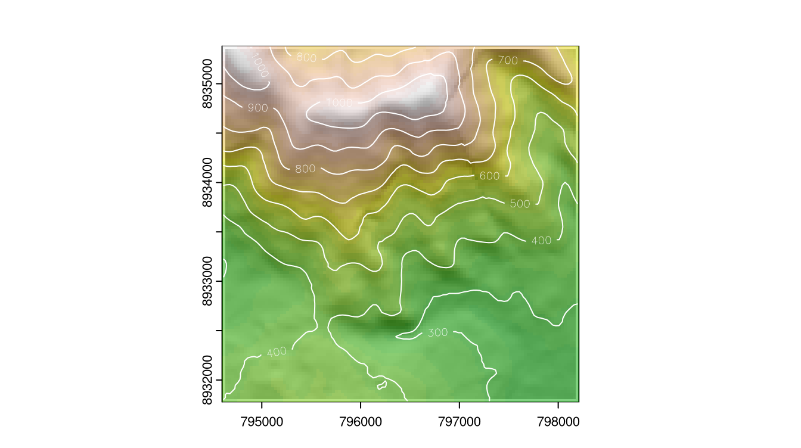
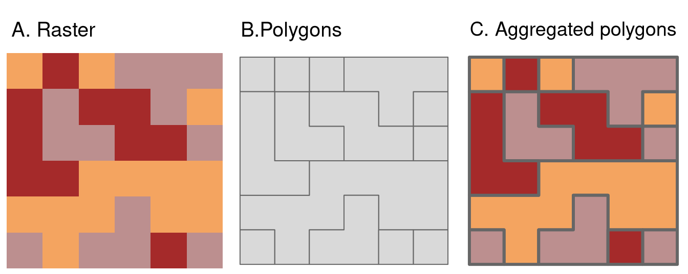

library(sf)
library(terra)
library(dplyr)Interacciones raster-vector
Introducción
Este capítulo se centra en las interacciones entre los modelos de datos geográficos ráster y vectoriales. Incluye cuatro técnicas principales: recorte y enmascaramiento ráster utilizando objetos vectoriales; extracción de valores ráster utilizando diferentes tipos de datos vectoriales; y conversión ráster-vector.
Recorte
Muchos proyectos de datos geográficos implican la integración de datos de muchas fuentes diferentes, como imágenes de teledetección (rásters) y límites administrativos (vectores). A menudo, la extensión de los conjuntos de datos ráster de entrada es mayor que el área de interés. En este caso, el recorte y el enmascaramiento ráster son útiles para unificar la extensión espacial de los datos de entrada. Ambas operaciones reducen el uso de memoria del objeto y los recursos computacionales asociados para los pasos de análisis posteriores, y pueden ser un paso de preprocesamiento necesario antes de crear mapas atractivos que incluyan datos ráster.
Utilizaremos dos objetos para ilustrar el recorte raster:
- Un objeto
SpatRastersrtmque representa la elevación (metros sobre el nivel del mar) en el suroeste de Utah - Un objeto vectorial (
sf)zionque representa el Parque Nacional de Zion.
Tanto el objeto de destino como el de recorte deben tener la misma proyección. Por lo tanto, el siguiente fragmento de código no sólo lee los conjuntos de datos del paquete spDataLarge, sino que también “reproyecta” zion:
srtm = rast(system.file("raster/srtm.tif", package = "spDataLarge"))
zion = read_sf(system.file("vector/zion.gpkg", package = "spDataLarge"))
zion = st_transform(zion, crs(srtm))Utilizamos crop() del paquete terra para recortar srtm. La función reduce la extensión rectangular del objeto pasado como primer argumento en función de la extensión del objeto pasado como segundo argumento.
srtm_cropped = crop(srtm, zion)Relacionada con crop() está la función terra mask(), que establece como NA los valores fuera de los límites del objeto pasado a su segundo argumento. Por tanto, el siguiente comando enmascara todas las celdas situadas fuera de los límites del Parque Nacional de Zion:
srtm_masked = mask(srtm, zion)Es importante destacar que, en la mayoría de los casos, se recomienda utilizar conjuntamente las funciones crop() y mask(). Esta combinación de funciones (a) limitaría la extensión del raster a nuestra área de interés y (b) reemplazaría todos los valores fuera del área a NA.
srtm_cropped = crop(srtm, zion)
srtm_final = mask(srtm_cropped, zion)Cambiando la configuración de mask() se obtienen resultados diferentes. Si se establece inverse = TRUE se enmascarará todo lo que esté dentro de los límites del parque (véase ?mask para más detalles), mientras que si se establece updatevalue = 0 se pondrán a 0 todos los píxeles fuera del parque nacional.
srtm_inv_masked = mask(srtm, zion, inverse = TRUE)
Extracción de datos de un raster
La extracción de raster es el proceso de identificar y devolver los valores asociados a un raster “objetivo” en ubicaciones específicas, basándose en un objeto “selector” geográfico (normalmente vectorial). Los resultados dependen del tipo de selector utilizado (puntos, líneas o polígonos) y de los argumentos pasados a la función terra::extract(). El reverso de la extracción raster — asignar valores de celda raster basado en objetos vectoriales — es la rasterización, que se describe más adelante.
El ejemplo básico consiste en extraer el valor de una celda ráster en puntos específicos. Para ello, utilizaremos zion_points, que contiene una muestra de 30 localizaciones dentro del Parque Nacional de Zion. El siguiente comando extrae los valores de elevación de srtm y crea un data frame con los ID de los puntos (un valor por fila del vector) y los valores srtm relacionados para cada punto. Ahora, podemos añadir el objeto resultante a nuestro conjunto de datos zion_points con la función cbind():
data("zion_points", package = "spDataLarge")
elevation = terra::extract(srtm, zion_points)
zion_points = cbind(zion_points, elevation)
La extracción de datos raster también funciona con selectores de tipo línea. Entonces, extrae un valor por cada celda raster tocada por la línea. El enfoque consiste en dividir la línea en muchos puntos y luego extraer los valores de estos puntos. Para demostrarlo, el código siguiente crea zion_transect, una línea recta que va del noroeste al sureste del Parque Nacional de Zion:
zion_transect = cbind(c(-113.2, -112.9), c(37.45, 37.2)) |>
st_linestring() |>
st_sfc(crs = crs(srtm)) |>
st_sf(geometry = _)La utilidad de extraer alturas de un selector lineal se ilustra imaginando que está planeando una excursión. El método que se muestra a continuación proporciona un perfil de elevación de la ruta (no es necesario que la línea sea recta), útil para estimar cuánto tiempo se tardará debido a las subidas.
El primer paso es añadir un id único para cada transecto. A continuación, con la función st_segmentize() podemos añadir puntos a lo largo de nuestra(s) línea(s) con una densidad proporcionada (dfMaxLength) y convertirlos en puntos con st_cast().
zion_transect$id = 1:nrow(zion_transect)
zion_transect = st_segmentize(zion_transect, dfMaxLength = 250)
zion_transect = st_cast(zion_transect, "POINT")Ahora, tenemos un gran conjunto de puntos, y queremos derivar una distancia entre el primer punto de nuestros transectos y cada uno de los puntos subsiguientes. En este caso, sólo tenemos un transecto, pero el código, en principio, debería funcionar con cualquier número de transectos:
zion_transect = zion_transect |>
group_by(id) |>
mutate(dist = st_distance(geometry)[, 1]) Por último, podemos extraer los valores de elevación de cada punto de nuestros transectos y combinar esta información con nuestro objeto principal.
zion_elev = terra::extract(srtm, zion_transect)
zion_transect = cbind(zion_transect, zion_elev)El zion_transect resultante puede utilizarse para crear perfiles de elevación, como se ilustra a continuación.

El último tipo de objeto vectorial geográfico para la extracción de rásters son los polígonos. Al igual que las líneas, los polígonos tienden a devolver muchos valores ráster por polígono. Esto se demuestra en el siguiente comando, que da como resultado un marco de datos con nombres de columna ID (el número de fila del polígono) y srtm (valores de elevación asociados):
zion_srtm_values = terra::extract(x = srtm, y = zion)Estos resultados pueden utilizarse para generar estadísticas resumidas de valores ráster por polígono, por ejemplo para caracterizar una única región o para comparar muchas regiones. Esto se muestra en el siguiente código, que crea el objeto zion_srtm_df que contiene estadísticas resumidas para los valores de elevación en el Parque Nacional de Zion:
group_by(zion_srtm_values, ID) |>
summarize(across(srtm, list(min = min, mean = mean, max = max)))| ID | srtm_min | srtm_mean | srtm_max |
|---|---|---|---|
| 1 | 1122 | 1818.212 | 2661 |
El trozo de código anterior utilizó dplyr para proporcionar estadísticas de resumen para los valores de celda por ID de polígono. Los resultados proporcionan resúmenes útiles, por ejemplo, que la altura máxima en el parque es de alrededor de 2.661 metros sobre el nivel del mar (otras estadísticas de resumen, como la desviación estándar, también se puede calcular de esta manera). Como en el ejemplo sólo hay un polígono, se devuelve una tabla de datos con una única fila; sin embargo, el método funciona cuando se utilizan varios polígonos selectores.
Un método similar funciona para el recuento de ocurrencias de valores ráster categóricos dentro de polígonos. Esto se ilustra con un conjunto de datos de cobertura del suelo (nlcd) del paquete spDataLarge, y se demuestra en el código siguiente:
nlcd = rast(system.file("raster/nlcd.tif", package = "spDataLarge"))
zion2 = st_transform(zion, st_crs(nlcd))
zion_nlcd = terra::extract(nlcd, zion2)
zion_nlcd |>
group_by(ID, levels) |>
count()| ID | levels | n |
|---|---|---|
| 1 | Developed | 4205 |
| 1 | Barren | 98285 |
| 1 | Forest | 298299 |
| 1 | Shrubland | 203700 |
| 1 | Herbaceous | 235 |
| 1 | Cultivated | 62 |
| 1 | Wetlands | 679 |

Aunque el paquete terra ofrece una rápida extracción de valores ráster dentro de polígonos, extract() puede seguir siendo un cuello de botella cuando se procesan grandes conjuntos de datos de polígonos. El paquete exactextractr ofrece una alternativa significativamente más rápida para extraer valores de píxeles a través de la función exact_extract(). La función exact_extract() también calcula, por defecto, la fracción de cada celda ráster solapada por el polígono, lo cual es más preciso.
Note
Los polígonos suelen tener formas irregulares y, por lo tanto, un polígono puede solapar sólo algunas partes de las celdas de un ráster. Para obtener resultados más detallados, la función terra::extract() tiene un argumento llamado exact. Con exact = TRUE, obtenemos una columna más fraction en el marco de datos de salida, que representa una fracción de cada celda que está cubierta por el polígono. Esto podría ser útil para calcular, por ejemplo, una media ponderada para rásters continuos o una cobertura más precisa para rásters categóricos. Por defecto, es FALSE ya que esta operación requiere más cálculos. La función exactextractr::exact_extract() siempre calcula la fracción de cobertura del polígono en cada celda.
Rasterización
La rasterización es la conversión de objetos vectoriales a raster. Normalmente, el ráster de salida se utiliza después para análisis cuantitativos (por ejemplo, análisis del terreno) o modelado. El proceso de rasterización puede ayudar a simplificar los conjuntos de datos porque todos los valores resultantes tienen la misma resolución espacial: la rasterización puede considerarse un tipo especial de agregación de datos geográficos.
El paquete terra contiene la función rasterize() para realizar este trabajo. Sus dos primeros argumentos son, x, objeto vectorial a rasterizar e, y, un objeto `plantilla raster’ que define la extensión, resolución y CRS de la salida. La resolución geográfica del ráster de entrada tiene un gran impacto en los resultados: si es demasiado baja (el tamaño de las celdas es demasiado grande), el resultado puede perder toda la variabilidad geográfica de los datos vectoriales; si es demasiado alta, los tiempos de cálculo pueden ser excesivos. No existen reglas sencillas a la hora de decidir la resolución geográfica adecuada, que depende en gran medida del uso que se pretenda dar a los resultados. A menudo, la resolución objetivo se impone al usuario, por ejemplo cuando el resultado de la rasterización debe alinearse con algún otro raster existente.
Para demostrar la rasterización en acción, utilizaremos una plantilla raster que tiene la misma extensión y CRS que los datos vectoriales de entrada cycle_hire_osm_projected y una resolución espacial de 1000 metros:
cycle_hire_osm = spData::cycle_hire_osm
cycle_hire_osm_projected = st_transform(cycle_hire_osm, "EPSG:27700")
raster_template = rast(ext(cycle_hire_osm_projected), resolution = 1000,
crs = st_crs(cycle_hire_osm_projected)$wkt)La rasterización es una operación muy flexible: los resultados dependen no sólo de la naturaleza de la plantilla raster, sino también del tipo de vector de entrada (por ejemplo, puntos, polígonos) y de una variedad de argumentos tomados por la función rasterize().
Para ilustrar esta flexibilidad, probaremos tres enfoques diferentes de la rasterización. En primer lugar, crearemos un raster que represente la presencia o ausencia de puntos de alquiler de bicicletas (conocidos como raster de presencia/ausencia). En este caso, rasterize() no requiere ningún argumento además de x e y, los objetos vector y raster antes mencionados.
ch_raster1 = rasterize(cycle_hire_osm_projected, raster_template)El argumento fun especifica los estadísticos de resumen utilizados para convertir múltiples observaciones muy próximas en celdas asociadas en el objeto raster. Por defecto se utiliza fun = "last" pero se pueden utilizar otras opciones como fun = "length", en este caso para contar el número de puntos de alquiler de ciclos en cada celda de la cuadrícula.
ch_raster2 = rasterize(cycle_hire_osm_projected, raster_template,
fun = "length")El nuevo resultado, ch_raster2, muestra el número de puntos de alquiler de bicicletas en cada cuadrícula. Los puntos de alquiler de bicicletas tienen diferentes números de bicicletas descritos por la variable capacity, lo que plantea la siguiente pregunta: ¿cuál es la capacidad de cada celda de la cuadrícula? Para calcularlo debemos “sumar” el campo ("capacity"), calculada con el siguiente comando (también se podrían utilizar otras funciones de resumen como mean):
ch_raster3 = rasterize(cycle_hire_osm_projected, raster_template,
field = "capacity", fun = sum, na.rm = TRUE)
Otro conjunto de datos basado en polígonos y fronteras de California ilustra la rasterización de líneas. Tras fundir los objetos poligonales en una multilínea, se crea un raster de plantilla con una resolución de 0.5 grados:
library(spData)
california = dplyr::filter(us_states, NAME == "California")
california_borders = st_cast(california, "MULTILINESTRING")
raster_template2 = rast(ext(california), resolution = 0.5,
crs = st_crs(california)$wkt)Al considerar la rasterización de líneas o polígonos, un argumento adicional útil es “touches”. Por defecto es FALSE, pero cuando se cambia a TRUE – todas las celdas que son tocadas por el borde de una línea o polígono obtienen un valor. La rasterización de líneas con touches = TRUE se muestra en el siguiente código.
california_raster1 = rasterize(california_borders, raster_template2,
touches = TRUE)Compárelo con una rasterización de polígonos, con touches = FALSE por defecto, que selecciona sólo las celdas raster cuyos centroides están dentro del polígono selector.
california_raster2 = rasterize(california, raster_template2) 
Vectorización espacial
La vectorización espacial es la contrapartida de la rasterización. Consiste en convertir datos ráster espacialmente continuos en datos vectoriales espacialmente discretos, como puntos, líneas o polígonos.
Note
En R, la vectorización suele referirse a la posibilidad de sustituir los bucles for y similares haciendo cosas como 1:10 / 2.
La forma más simple de vectorización es convertir los centroides de las celdas raster en puntos. as.points() hace exactamente esto para todas las celdas de cuadrícula raster que no sean NA. Tenga en cuenta que aquí también utilizamos st_as_sf() para convertir el objeto resultante a la clase sf.
elev = rast(system.file("raster/elev.tif", package = "spData"))
elev_point = as.points(elev) |>
st_as_sf()
Otro tipo común de vectorización espacial es la creación de curvas de nivel que representen líneas de altura o temperaturas continuas (isotermas), por ejemplo. Utilizaremos un modelo digital de elevación (MDE) del mundo real porque el ráster artificial elev produce líneas paralelas. Las curvas de nivel se pueden crear con la función terra as.contour(), que es a su vez una envoltura de la función incorporada en R filled.contour(), como se demuestra a continuación:
dem = rast(system.file("raster/dem.tif", package = "spDataLarge"))
cl = as.contour(dem) |>
st_as_sf()
plot(dem, axes = FALSE)
plot(cl, add = TRUE)
También pueden añadirse contornos a los gráficos existentes con funciones como contour(), rasterVis::contourplot() o tmap::tm_iso() y, las isolíneas pueden etiquetarse.

El último tipo de vectorización implica la conversión de rásters en polígonos. Esto puede hacerse con terra::as.polygons(), que convierte cada celda ráster en un polígono formado por cinco coordenadas, todas las cuales se almacenan en memoria (¡explicando por qué los rásters son a menudo rápidos comparados con los vectores!).
Esto se ilustra a continuación convirtiendo el objeto grain en polígonos y disolviendo posteriormente los bordes entre polígonos con los mismos valores de atributo (véase también el argumento dissolve en as.polygons()).
grain = rast(system.file("raster/grain.tif", package = "spData"))
grain_poly = as.polygons(grain) |>
st_as_sf()